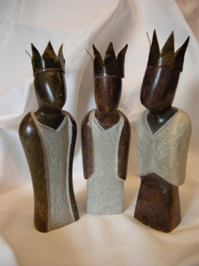

Over mij
Over mij
In mijn eigen atelier in Culemborg geef ik teken- en schildercursussen aan kinderen, jeugd en volwassenen. Cursisten kunnen kiezen uit verschillende thema’s: landschappen, dieren, portretten, striptekenen en modetekenen.
Plezier in tekenen en schilderen, maar ook goede begeleiding staan bij mij altijd centraal.
Daarnaast geef ik met heel veel plezier cultuurlessen in groepen van 3 t/m 8 op de Koningin Beatrix school in Buren. Ook heb ik voor de Wereldwinkel tevens een aantal schetsen/ontwerpen gemaakt met als thema ‘kerstfeest’. Deze zijn door een Zimbabwaanse kunstenaar gebeeldhouwd uit natuursteen en zijn nu te koop in een aantal wereldwinkels.
